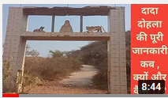

aaj हम आपको बताएंगे कि, पुराने समय में औरतें किस प्रकार सती हो जाती थी| किस प्रकार वे जलती चिता में प्रवेश कर जाती थी| भारत के अंदर ऐसी बहुत सी घटनाएं हैं, जब औरतें सती हुई| लेकिन आज की इस पहल में हम आपको कलाली jhojhu गांव की दादी सती के बारे में बताएंगे| इसमें हम आपको बताएंगे कि किस प्रकार एक औरत अपने पति के साथ जलती हुई चिता में बैठ गई और सती हो गई |
यह सत्य कथा बहुत साल पहले की है| जब एक औरत की शादी jhojhu गांव के बनिए के साथ हुई, तो एक दिन बनिया जब अपनी पत्नी के साथ घर लौट रहा था तो उनका सामना कुछ डाकुओं से हुआ| पहले के समय में औरतें बहुत से आभूषण पहनती थी तो रास्ते में आते समय डाकू ने उनके सारे आभूषण छीन लिए और बनिए की उसी जंगल में हत्या कर दी |
उस घटना से वह औरतें जो आज दादी सती के नाम से प्रसिद्ध है वह अपने पति के साथ जल गई और सती हो गई| उन्होंने अपने पति के सिर को अपनी गोद में रखा और जलती चिता पर बैठ गई और वहीं पर सती हो गई यह झकझोर कर देने वाली एक सत्य कथा है |
यह उस समय की बात है जब हरियाणा के कलाली गांव की स्थापना नहीं हुई थी और यहां पर एक गहरा जंगल था सती होने के बाद वहां पर दादी की एक छोटे समाधि बनाई गई |जो समय के साथ-साथ बहुत नीचे रेत के अंदर दब गई ,उनकी समाधि पर इतनी मिट्टी हो गई कि मानो किसी ने एक रेत का पहाड़ बना दिया हो, फिर दादी सती ने अपनी लीला दिखाई और गांव के एक बनिए को संपन्न में दर्शन दिया |
उस समय उस बनिए का लड़का बहुत बीमार चल रहा था| और बहुत से प्रयासों के बाद और डॉक्टर की सलाह के बाद भी उसकी सेहत में कोई भी सुधार नहीं आ रहा था |तो दादी सती उस बनिए की स्वपन में आती हैं, और कहती हैं कि ,मैं कलाली गांव के जंगल में बहुत नीचे रेत के नीचे दबी हुई हूं |
अगर तुम मुझे निकालने में समर्थ हो तो तुम्हारा लड़का ठीक हो जाएगा और बिल्कुल स्वस्थ हो जाएगा | उसके बाद बनिए ने गांव में आकर इस घटना का जिक्र किया और लोगों से पूछताछ की ||की इस प्रकार की घटना कोई गांव में हुई थी या नहीं तो गांव के बूढ़े लोगों ने बताया कि बहुत साल पहले ऐसी एक घटना हुई थी और गांव के लोगों ने बनिए को वह जगह दिखाइए जहां पर दादी सती हुई थी |
उसके पश्चात बनिए ने वहां पर खुदाई का काम शुरू करवाया, लगभग 6 महीने लगातार खुदाई करने के बाद दादी सती की समाधि वहां पर दिखाई दी |जो किसी चमत्कार से कम नहीं ,उसके पश्चात बनिए ने वहां पर एक दादी की मूर्ति बनवादी और उन्हें पूजना शुरू कर दिया |आज इस जगह पर दादी सती का एक मंदिर बना हुआ है |जहां पर आसपास के 40 गांव के लोग पूजा अर्चना करने आते हैं |
लोगों का मानना है कि दादी सती की पूजा अर्चना करने से त्वचा की बीमारियां ठीक हो जाती हैं और शरीर स्वस्थ हो जाता है |आज भी दादी सती के मंदिर में बनिए हर साल भंडारा करते हैं| और दादी सती की पूजा अर्चना करते हैं |आपको यह सत्य घटना कैसी लगी कमेंट करके जरूर बताएं| पवित्र धाम चैनल का मकसद दादी सती की प्रसिद्ध कथा का वर्णन करना है|
इस कथा का महत्व किसी भी धर्म को ठेस पहुंचाना या हिंसा से जुड़ा हुआ नहीं है हम हर प्रकार के पवित्र स्थलों की जानकारी देते रहते हैं |धन्यवाद जय दादी सती|
today's , we will tell you how women used to become sati in olden times. How she used to enter the burning pyre. There are many such incidents inside India, when women are persecuted. But in today's initiative, we will tell you about the grandmother of Sati, Kalali jhojhu village. In this, we will tell you how a womansat with her husband in a burning pyre and became a sati.
This true story is from many years ago. When a woman was married to a baniya from the village of jhojhu,one day when the baniya was returning home with his wife, he encountered some bandits. In earlier times women used to wear a lot of jewelery, while on the way,the robber snatched all their jewelery and murdered Baniya in the same forest.
Due to that incident, the woman who is famous by the name of grandmother Sati todayGot burnt and sati. She put her husband's head on her lap and sat on the burning pyre and sat there, it is a shocking truth.
It is a time when Kalali village in Haryana was not established and here But after Sati was a deep forest, there was a small mausoleum of grandmother, which over time got buried under the sand, their tomb was somuch mud that someone made a sand mountain.
Ho, then Grandmother Sati showed her leela and appeared in affluence to a bunny of the village. At that time, that bani's boywas very sick And after many efforts and even after the advice of the doctor, there was no improvement in her health.
So grandma Sati comes in the dream of that bani,and says, I am in the forest of Kalali village, very low in the sand. Buried down. If you are able to get me out, your boy will be cured and will be perfectly healthy.After that, Baney came to the village and mentioned this incident and questioned the people.
Whether it happened in the village or not, the old people of the villagetold that such an event had happened many years ago and the people of the village showed Banee the place where the grandmother was sati. After about 6 months ofcontinuous digging, the tomb of Grandma Sati appeared there.
Which is nothing short of a miracle, after that Baney got a grandma's idol built there and startedworshiping her. Today at this place, Grandmother Sati's There is a temple built where people from around 40 villages come to offer prayers.
People believe that by worshiping grandmother Sati, skin diseases are cured. Goes and the body becomes healthy. Even today, in the temple of Dadi Sati, every year we do Bhandara.And Grandma worships Sati.
Please tell us how you felt about this true event. The purpose of the pavitra dham website is to narrate the famous story of Dadi Sati.The importance of this story is not linked to any religion hurting or violence.
We keep giving information about all kinds of holy places. keep visiting on website to get information about holy places. Thank you Jai Dadi Sati.

dada dhola history in hindi
2>
Mehra की पहाड़ियों पर जय दादा धोलाजी के नाम से पूजा स्थल है| वहां 40 से अधिक गांव के हजारों लोग आते हैं |एक अन्य धार्मिक स्थल का नाम बाबा बन देवजी रखा गया है | दादा धोला हरियाणा के सुरेती गांव के रहने वाले थे , दादा धोला को भगवान का अवतार माना जाता है ,बताया जाता है कि दादा दो ला के जीवन काल में उनका परिवार बहुत गरीबी में चल रहा था |
दादा भगवान को बहुत मानते थे और हर रोज उनकी पूजा अर्चना किया करते थे| वह धन दौलत पैसों में विश्वास नहीं रखते थे |वह हमेशा साधु-संतों जैसे कपड़े पहनते थे| दादा धोला हर रोज 4:00 बजे उठ जाते थे और हर रोज 5 किलोमीटर दूर पैदल चलकर तालाब में स्नान करने जाते थे| और फिर घर आकर भगवान की भक्ति में खो जाते थे ,दिन पर दिन दादा का भक्ति में आकर्षण बढ़ता जा रहा था
वह भक्ति में और ज्यादा लीन रहने लगे थे| इसके साथ-साथ दादा धोला को बहुत सी समस्याओं का सामना भी करना पड़ रहा था| गांव में दादा के बारे में तरह-तरह के विचार थे, इन सब से छुटकारा पाने के लिए और शांति पाने के लिए दादा धोला हरियाणा के मेहरा के पहाड़ों में आ गए, और यहां दादा ने संतों की भांति भगवान की अपार भक्ति की और उन्होंने भक्ति से बहुत सी शक्तियां ग्रहण की, दादा धोला श्री कृष्ण की तरह गायों से बहुत प्यार करते थे और उनके साथ अपना ज्यादातर समय बिताते थे|
आज भी दादा ढोला के धाम पर एक बहुत बड़ी गौशाला है जिसमें भक्त जन गायों की देखरेख करते हैं| आज भी लोग दादा दोहला के धाम पर पशुओं की सुरक्षा की कामना करने आते हैं| दादा ढोला ने अपने जीवन काल में बहुत से चमत्कारों से लोगों को आश्चर्यचकित किया, जानवरों को ठीक करने के साथ-साथ उन्होंने अपनी शक्ति और भक्ति से लोगों की बीमारियों का इलाज किया| उसके पश्चात दादा ढोला ने उसी पहाड़ी पर समाधि ली जिस पर वह तपस्या किया करते थे फिर दादा के भक्त जनों ने वहां पर दादा की एक समाधि बनवा दी|
जब भी लोगों को कोई परेशानी आती वे दादा की समाधि पर पूजा करते और उनकी हर मनोकामना पूरी हो जाती ,समय बीतता चला गया और लोगों में दादा धोला के प्रति श्रद्धा भक्ति बढ़ती चली गई| और दादा दौला का धाम और बड़ा होता चला गया| आज के समय में दादा के दाम पर पहाड़ियों के ऊपर एक भव्य मंदिर बना हुआ है| जहां लाखों लोग दर्शन करने आते हैं और उनकी मनोकामना पूरी हो जाती है| दादा की समाधि लेने के बाद यहां बहुत से चमत्कार होते रहते हैं|
जैसे आज से करीब 35 साल पहले तक हर पूर्णिमा के दिन एक पत्थर से पानी निकलता था और आज तक कोई भी वैज्ञानिक इस रहस्य को नहीं जान पाया है| पूर्णिमा के दिन दूर दूर से लाखों लोग दादा के पवित्र पानी में स्नान करने के लिए आते थे| इसके पश्चात भी दादा दोला कई लोगों को दर्शन दे चुके हैं, उन भाग्यशाली लोगों में से एक है, कलाली गांव के नेकी राम जी, दादा के बहुत बड़े भक्त थे उन्होंने बताया था कि एक बार पूर्णिमा के दिन जब दादा के दाम पर पानी निकल रहा था तो वह धाम पर दिन में नहीं जा पाए,
फिर उन्होंने रात को दाम पर जाकर दादा डोला के जल में स्नान करना चाहा| जब वे धाम के निकट पहुंचे और पहाड़ी पर चढ़ने लगे तो उन्होंने देखा कि सामने से पहाड़ से कोई बाबाजी उतर रहे थे| जिनके हाथ में चिमटा एवं कमंडल था जब वे निकट आए तो नेकी राम जी ने उन्हें प्रणाम किया बाबा जी ने गर्दन हिलाकर प्रणाम स्वीकार किया और आगे बढ़ गए|
जैसे ही दादा धोलाजी नेकी राम जी के निकट से निकले तो उन्हें आभास हुआ कि यह बाबा कोई और नहीं बल्कि स्वयं दादा धोलाजी हैं तो उन्होंने तुरंत उसी समय पीछे मुड़कर देखा तो उन्हें वहां पर कोई भी नहीं दिखाई दिया दादा धोला वहां से अदृश्य हो चुके थे| उसके बाद नेकी राम जी ने उन्हें ढूंढने का बहुत प्रयास किया लेकिन वह पूरे पहाड़ और जंगल में कहीं भी दिखाई नहीं दिए| यह दृश्य लोगों के लिए किसी चमत्कार से कम नहीं था| इसके साथ साथ पुरानी समय का एक और किस्सा दादा दौला का बहुत प्रसिद्ध है|
यह घटना बरसो वर्ष पहले दादा संघों के साथ घटित हुई थी, जब दादा सांगू अपनी गाय चरा रहे थे, तो उन्हें भी एक बाबा जी दिखाई देते हैं, एक हाथ में कमंडल था, और एक हाथ में चिमटा लेकर बाबा जी दादा सांगू के पास आते हैं और उनसे खीर बनाने की विनती करते हैं| Dada कहते हैं कि बाबा जी मेरे पास जितनी भी गाए हैं उनमें से कोई भी गाय दूध नहीं देती है| इसलिए मैं खीर बनाने में असमर्थ हूं| इस पर बाबा जो स्वयं दादा धोला थे, कहते हैं कि यह जो छोटी गईया है इसका दूध निकाल के ले आओ और खीर बना लो|
फिर दादा संगो जी उस छोटे गाय की तरफ देखते हैं जिसने कभी दूध नहीं दिया था| जो बहुत छोटी थी, फिर दादा सांगू बाबाजी के कमंडल लेकर गाय का दूध निकालने लगते हैं और गाय दूध दे देती है| फिर दादा सांगू बोलते हैं कि बाबा जी मेरे पास चावल भी नहीं है| इस पर बाबा जी दादा सांगू को एक चावल का कटोरा भी देते हैं, और खीर बनाने को बोलते हैं दादा संगो खीर बनाते हैं और बाबा जी को खाने को कहते हैं|
तो बाबा जी दादा संघों को उनके साथ खाने को कहते हैं, इसके बाद जब वे दोनों खीर खा रहे होते हैं तो दादा सांगू को लगा कि वह किसी बाबाजी का झूठ खा रहे हैं| इस पर दादा सांगू ने असंतोष जताया और वे मन ही मन बुरे विचारों से गिर गए इसके पश्चात बाबाजी जो दादा दौड़ा के रूप में थे उन्होंने उनकी पीछे बह रहे पानी के बारे में बताया और दादा डोला ने कहा कि मैंने तुम्हारी झूठ खाई है ना की तुमने|
मैं बार-बार अपना हाथ इस पवित्र पानी में साफ कर रहा था जिससे भोजन में मेरा झूठ प्रवेश नहीं हुआ ,बल्कि मैं तुम्हारा झूठ खा रहा था फिर दादा दोला ने दादा सांगू को आशीर्वाद देते हुए एक श्लोक में कहा कि 40 पीडी संगो संगो फिर जाट गुजारा अर्थात 40 पीढ़ी सांगवान खाप की बहुत मान्यता एवं प्रसिद्धि से व्यतीत होंगी|
यह कहते हुए दादा दौला अपने स्थान से अदृश्य हो गए| उसके पश्चात वे कहीं भी दिखाई नहीं पड़े दादा सांगू के बारे में बताते चले तो वे सांगवान समूह के पूर्वज थे आपको दादा दौला कि यह सत्य कथा कैसी लगी हमें कमेंट करके जरूर बताएं और जय दादा धोला लिखना ना भूलें दादा डोला के लिए आपके विचार कैसे हैं कमेंट करके जरूर बताएं|
पवित्र धाम चैनल का मकसद दादा ढोला की प्रसिद्ध कथा का वर्णन करना है इस कथा का महत्व किसी भी धर्म को ठेस पहुंचाना या हिंसा से जुड़ा हुआ नहीं है हम हर प्रकार के पवित्र स्थलों की जानकारी देते रहते हैं पवित्र स्थलों की जानकारी सही समय पर जानने के लिए website को home page per save or email krae करें धन्यवाद जय दादा dhola
Dada dhola history in english
There is a place of worship on the hills of Mehra in the name of Jai Dada Dholaji. Thousands of people from more than 40 villages come there. Another religious place is named Baba Ban Devji. Dada Dhola hailed from Sureti village in Haryana, Dada Dhola is considered to be an incarnation of God, it is said that during Dada Do La's life,
his family was running in great poverty. Dada believed God very much and everyday Used to worship him. He did not believe in money and money. He always wore clothes like saints and saints. Dada Dhola used to get up every day at 4:00 pm and used to walk 5 kilometers every day to bathe in the pond.
And then he used to come home and get lost in devotion to God, day by day the attraction of Dada was increasing in devotion and he was getting more absorbed in devotion. Along with this, Dada Dhola was also facing many problems. There were different views about Dada in the village, to get rid of all this and to find peace, Dada Dhola came to the mountains of Mehra in Haryana,
and here Dada did immense devotion to God like saints and he Received many powers by devotion, Dada Dhola loved cows very much like Shri Krishna and spent most of his time with them. Even today there is a very large gaushala on the Dham of Dada Dhola in which devotees look after the cows. Even today people come to Dada Dohala's Dham to pray for the protection of animals. Dada Dhola surprised people with many miracles during his lifetime,
along with curing animals, he cured the diseases of people with his power and devotion. After that Dada Dhola took samadhi on the same hill on which he used to do penance. Then the devotees of Dada built a tomb of Dada there. Whenever people faced any problem, they worshiped at the tomb of Dada and every wish of theirs was fulfilled, time passed and the devotion and devotion of Dada Dhola increased among the people.
And Dada Daula's dham continued to grow bigger. In today's time, a grand temple is built atop the hills at the cost of Dada. Where millions of people come to visit and their wish is fulfilled. After taking Dada's tomb, many miracles happen here. Like, till about 35 years ago, water used to come out of a stone on every full moon day and till date no scientist has known this secret.
On the full moon day, lakhs of people from far and wide used to come to bathe in the holy water of Dada. Even after this, Dada Dola has appeared to many people, one of those lucky people, Neki Ram ji of Kalali village, was a great devotee of Dada,
he told that once on a full moon day when water came out at Dada's price. If he had stayed, he could not go to the Dham during the day, then he wanted to go and bathe in Dada Dola's water at night. When they reached near the Dham and started climbing the hill, they saw that Babaji was coming down from the mountain in front. Those who had tongs and kamandals in their hands, when they came near, Neki Ram ji bowed to them.
Baba shook his neck and accepted the salutation and moved forward. As soon as Dada Dholaji came out from close proximity to Rama ji, he realized that this Baba is none other than Dada Dholaji himself, so he looked back at the same time, and then he saw no one there but Dada Dhola has become invisible from there. Were After that Neki Ram ji tried hard to find him, but he did not appear anywhere in the whole mountain and forest.
This scene was nothing short of a miracle for the people. Along with this, another story of old times is very famous of Dada Daula. This incident happened with Dada Sanghas years ago, when Dada Sangu is grazing his cow, he also sees a Baba Ji, he had a kamandala in one hand, and Baba ji with grandfather in one hand near the grandfather They come and ask them to make Kheer.
Dada says that none of the cows that Baba Ji has sung to me, give milk. So I am unable to make kheer. On this, Baba who himself was Dada Dhola, says that take out the milk of this little girl and make kheer. Then Dada Sango ji looks at the little cow who had never given milk.
Who was very young, then Dada Sangu starts extracting cow's milk with Babaji's kamandal and the cow gives milk. Then Dada Sangu says that Baba ji I do not even have rice. On this Baba ji also gives a rice bowl to Dada Sangu, and tells him to make Kheer, Dada Sango makes Kheer and tells Baba ji to eat.
So Baba ji asks Dada Sanghas to eat with him, after that when both of them are eating Kheer, Dada Sangu felt that he was eating the lies of Babaji. On this, Dada Sangu expressed his dissatisfaction and he fell down with bad thoughts in mind,
after which Babaji who was in the form of Dada Ran told about the water flowing behind him and Dada Dola said that I have eaten your lie or not. You I was cleaning my hand again and again in this holy water that did not enter my lie in food, but I was eating your lie. Then Dola Dola while blessing Dada Sangu said in a verse that 40 PD Sango Sango again. The Jats will live by that means 40 generations will pass with much recognition and fame of Sangwan Khap.
Saying this, Dada Daula disappeared from his place. After that, he could not be seen anywhere, when he used to tell about Dada Sangu. He was the ancestor of the Sangwan group, please tell me how Dada Daula felt about this true story, and do not forget to write Jai Dada Dhola, how do you comment on Dada Dola? The purpose of the pavitradham website is to narrate the famous story of Dada Dhola. The importance of this story is not to hurt any religion or is associated with violence.
We keep giving information about all kinds of holy places, to know the information of holy places at the right time keep visiting on that site, thanks, jai dada dhola